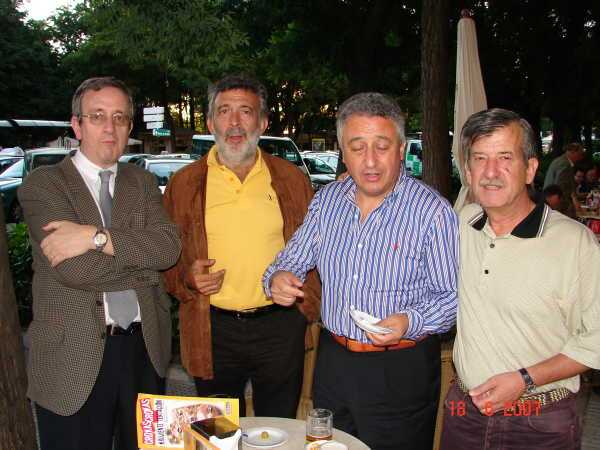

Sigue la misma historia, esta vez, el que se aprendió la lección ha sido Bitaubé, Del Rey pregunta a Morris-son si él va a escote o qué, Escribano, como decíamos, no habla y hemos descubierto que el "amago de pagar" de Barrallo era falso, observen la mano en el hombro de Escribano... ya nos parecía, ya.
 |